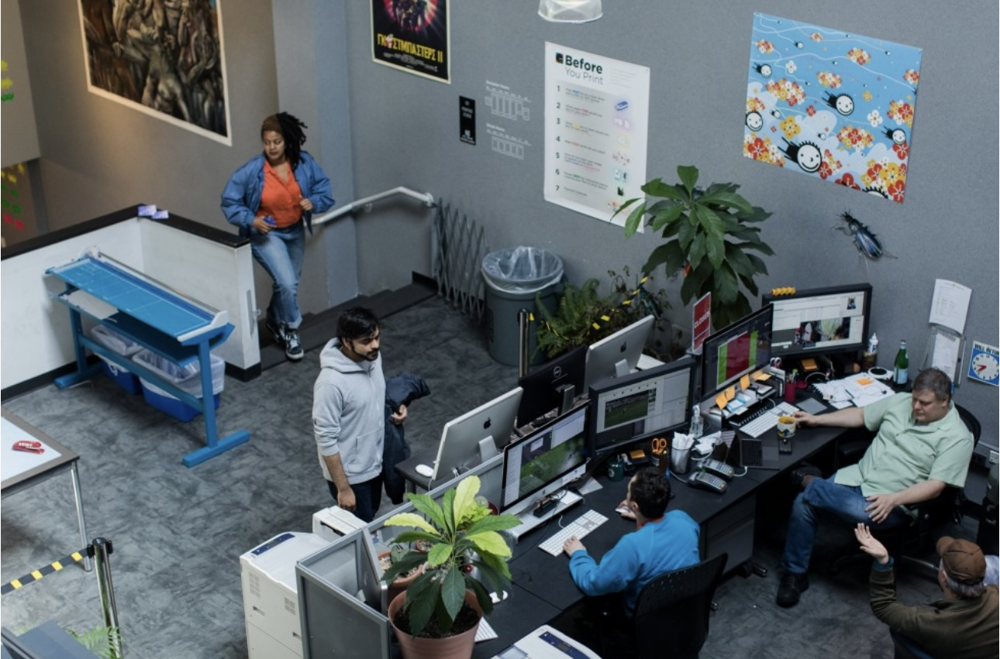
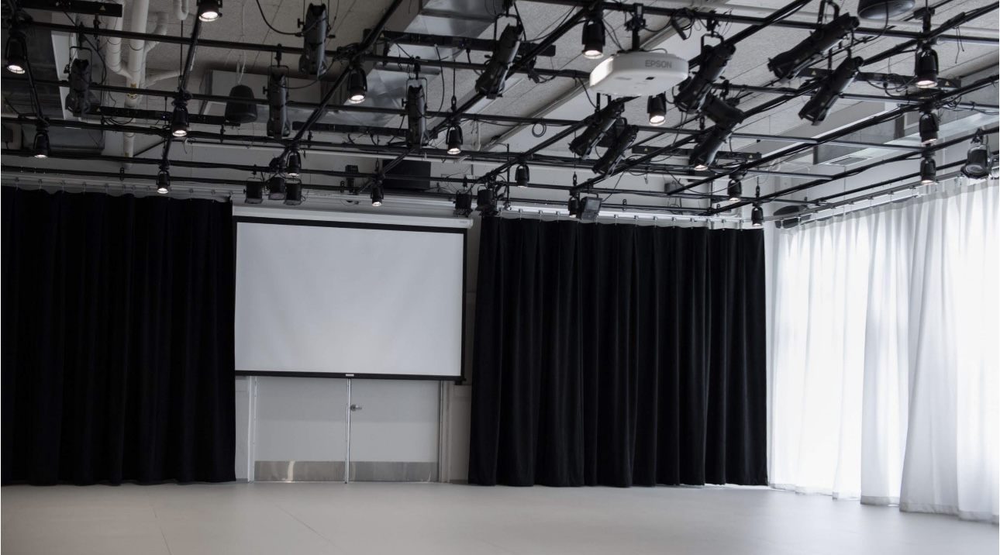
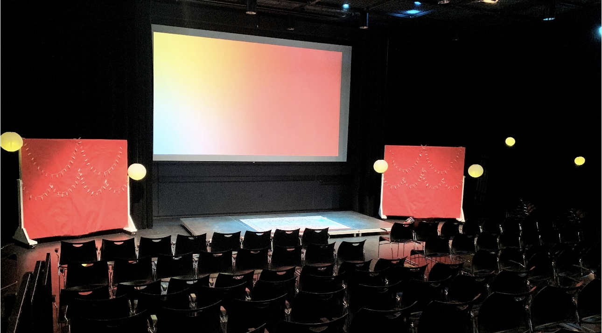
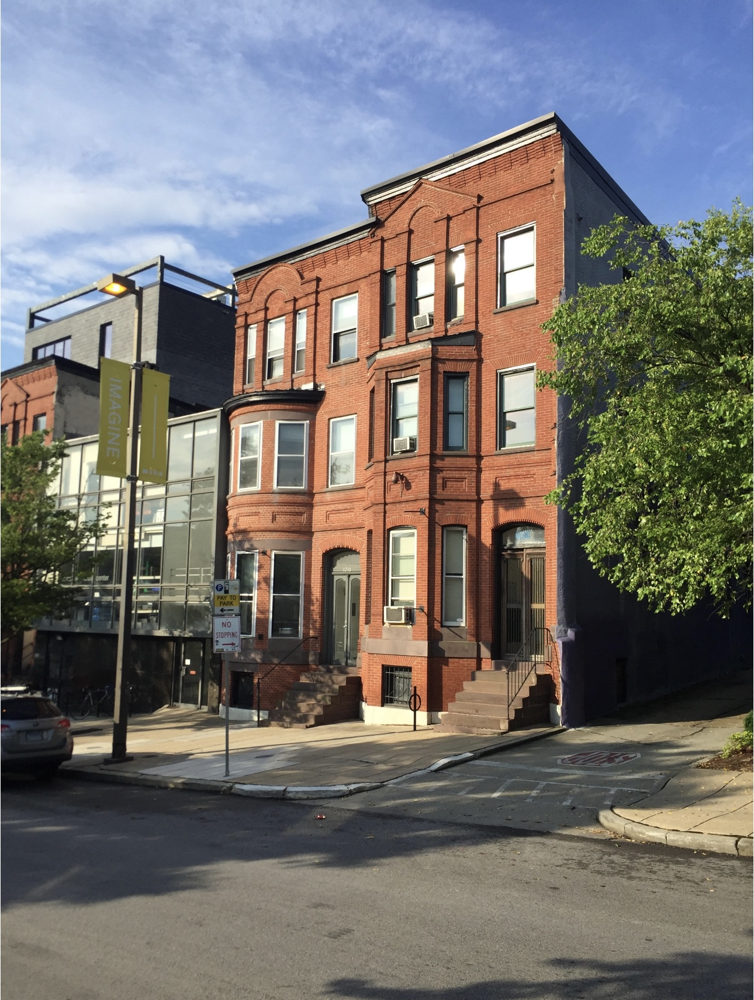
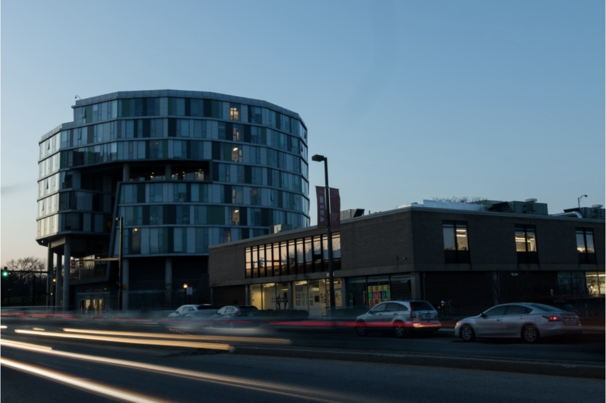
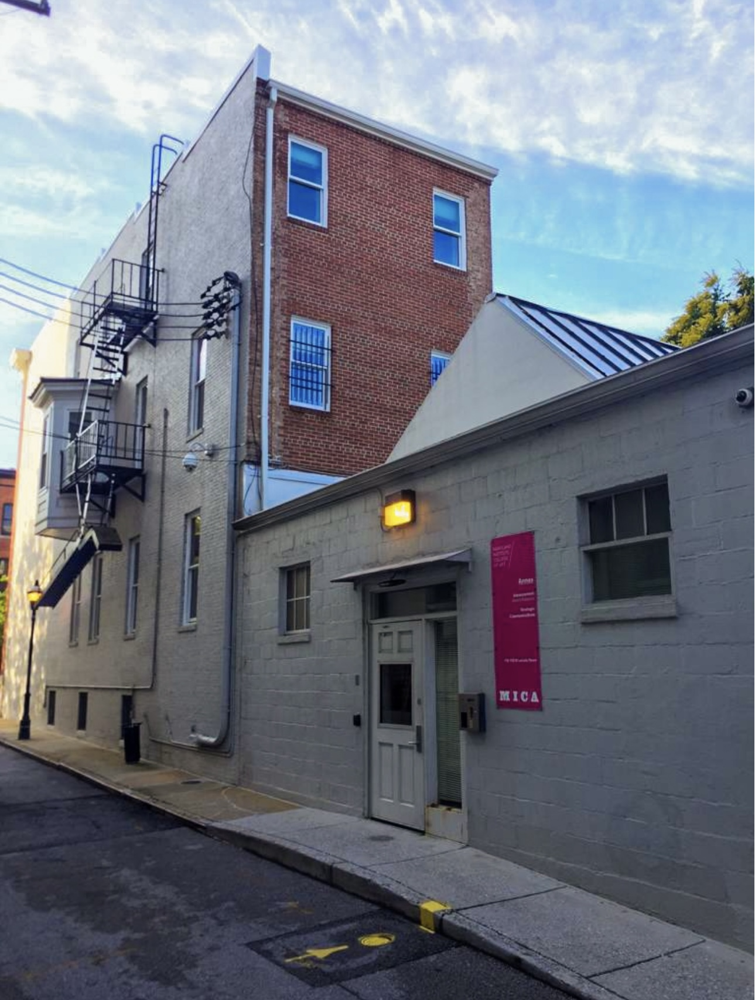
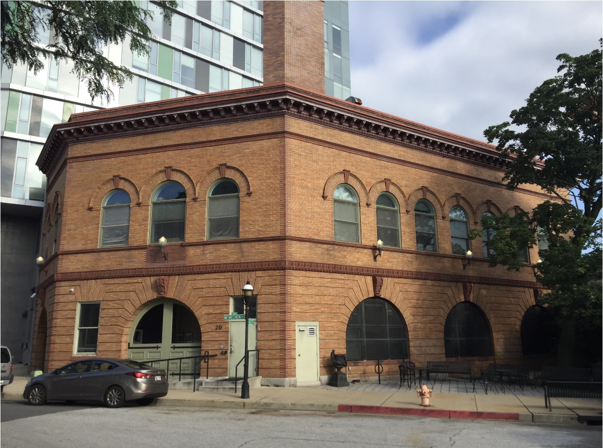

Listed on the National Register of Historic Places, MICA‘s Main
Building houses the Office of Admission and Financial Aid, the
Office of the President, the Office of the Provost/Academic Affairs,
the First Year Experience and Photography departments, as well as
studio space for painting and drawing classes. The Main Building
includes expansive studio classrooms, a student-run gallery, and
darkrooms for photography processing.
1300 W Mt Royal Ave, Baltimore, MD 21217, USA

The Brown Center was named in honor of Baltimore philanthropists and
former MICA trustees Eddie C. and C. Sylvia Brown. Built
specifically for design and time-based media programs, the Brown
Center houses classroom and studio space for Animation and both
graduate and undergraduate Graphic Design programs. It is also home
to Falvey Hall, a 525-seat auditorium, as well as Leidy Atrium and
Rosenberg Gallery. When it opened, Architectural Record called it
”the finest modern building erected in Baltimore or Washington“ in a
quarter-century.
1301 W Mt Royal Ave, Baltimore, MD 21217, USA

Housing Decker Library and Pinkard Gallery, as well as MICA Postal
and Print Center on the ground floor, the Bunting Center‘s classroom
space on the third and fourth floors is mostly dedicated to
Humanistic Studies classes. A full student service center with
offices for Student Affairs, Student Accounts, Enrollment and
Advising and International Affairs is housed on the second floor
along with Java Corner, a cafe serving light fare and beverages
during daytime hours. Additional offices on upper floors include
Human Resources and Technology.
1401 W Mt Royal Ave, Baltimore, MD 21217, USA

Formerly the Cannon Shoe Factory, the Fox Building is named for
Charles James Fox, and houses classrooms for Ceramics, Painting,
Drawing and Illustration. The Charles James Fox Building is home to
two large exhibition spaces, Decker Gallery and Meyerhoff Gallery,
as well as exhibition spaces on the second and third floors. Fox
Building also includes a wood shop, ceramics facilities, and studio
space, as well as the Office of Exhibitions. CafeDoris, which is
located on the first floor and named for alumna Doris Rief, serves
light fare to students and community members.
1305 W Mt Royal Ave, Baltimore, MD 21217, USA

The Dolphin Design Center houses state-of-the-art fabrication labs,
classrooms and collaborative areas for B.F.A. programs in
Architectural Design, Game Design, Interactive Arts and Product
Design as well as studio concentrations in Game Arts and Sound Art.
100 Dolphin St, Baltimore, MD 21217, USA

Mount Royal Station houses the Middendorf Gallery as well as studio
and classroom space for the Interdisciplinary Sculpture and Fiber
departments. It was originally built in 1896 as a B and O passenger
train station, and now is an official historic landmark. Mount Royal
Station‘s facilities for students include a metalworking foundry,
weaving loft with large-scale looms, dye kitchen, and silkscreen
exposure unit.
1400 Cathedral St, Baltimore, MD 21201, USA

The Art Tech Center houses a number of technology resources for the
MICA campus. Originally a union headquarters, the College developed
the Center as a central resource to house MICA’s growing fabrication
and printing technologies, including: - The MICA Print Lab - The AV
Services Tech Desk - The Fiber Department‘s wide format textile
printing system - The Help Desk - A computer lab with that includes
flatbed scanners
1204 W Mt Royal Ave, Baltimore, MD21217, USA

MICA’s smallest black box theater presents a multipurpose events
space, perfect for everything from small performances to receptions.
This performance space is generally not available for external
rentals. Located on the first floor of the Leake Hall dormitory, A
Box is a versatile space that can be transformed to meet the needs
of a variety of events, ranging from theatrical to educational and
from casual to professional. ABOX‘s unique glass wall looks out onto
a patio and garden space, providing a backdrop for events needing
plenty of natural light.
120 Mc Mechen Street, Baltimore, MD, USA

Built to house everything from theater to multimedia, MICA’s BBOX
gives students a place for their performance work to thrive. Located
on the ground floor of the Gateway building, BBOX is MICA’s premier
black box theater. It serves as a platform for a diverse range of
works and mediums ranging from traditional theater to experimental
and interdisciplinary exhibitions. Named in recognition of two
creative MICA spirits, BBOX is a play on “Betty and Bill’s Black
Box”, specifically for Betty Cooke, and William O. Steinmetz.
1601 West Mount Royal Avenue, Baltimore, MD, USA

The MICA Store is a nonprofit dedicated to providing students,
artists, and the general public with quality art products at
competitive prices.
The MICA Store is staffed by experienced artists and helpful
students who have an extensive knowledge of our products and their
uses. The College Store carries a large assortment of art supplies
for every discipline, and the staff can give assistance with
special-ordering items that aren‘t stocked.
Funds raised through the store are given back to the MICA students
through scholarships and improvements to the College.
1501 W Mt Royal Ave, Baltimore, MD 21217, USA

1200 W Mt Royal Ave, Baltimore, MD 21217, USA

1212 W Mt Royal Ave, Baltimore, MD 21217, USA

1212 W Mt Royal Ave, Baltimore, MD 21217, USA

The 15/15 Building is home to the Printmaking Department as well as
the Globe Collection and Press.
1515 W Mt Royal Ave, Baltimore, MD 21217, USA

MICA‘s First Year Experience courses are held in 81 Mosher as are
3-D Fabrication courses.
81 Mosher St, Baltimore, MD 21217, USA

The Annex, located in a converted row home near MICA‘s Main
Building, is home to the Office of Advancement, Office of Alumni and
Parent Relations and Office of Strategic Communications.
The Annex, Baltimore, MD 21217, USA

Located in the Brown Center, Falvey Hall offers a venue for
intellectual and cultural life. It is ideal for everything from
artists’ talks to musical performances, and film screenings.
1301 W Mt Royal Ave, Baltimore, MD 21217, USA

20 Mc Mechen St, Baltimore, MD, USA

In addition to housing the graduate admission office, publicly
accessible galleries and Nancy, a cafe that serves the MICA
community and neighborhood residents, the 120,000-square-foot
facility includes instructional space for students in the M.F.A. in
Curatorial Practice, LeRoy E. Hoffberger School of Painting, Mount
Royal School of Art, M.F.A. in Photographic and Electronic Media
programs, Rinehart School of Sculpture and M.A. in Social Design
programs. It also includes 177 studios, digital, computer, and photo
labs, a fabrication workshop, and spray booths.
131 W North Ave, Baltimore, MD 21201, USA

The Health and Wellness Center is home to the Fitness Center,
Student Health Services, Counseling Center, Health Education
Programming and Campus Safety offices. The Fitness and Student
Counseling Center are located on the lower level, while other
offices are on the upper level. Offices in Wellness Center - Campus
Safety HQ - Fitness Center - Student Health Services - Student
Counseling Center
1501 W Mt Royal Ave, Baltimore, MD 21217, USA

The JHU-MICA Film Centre is the home of the M.F.A. in Filmmaking and
B.F.A. in Film and Video programs. The Johns Hopkins University
(JHU) and Maryland Institute College of Art (MICA) Film Centre is
situated inside the historic Centre Theatre in the Station North
Arts and Entertainment District, a neighborhood adjacent to MICA’s
main campus. Through partnerships with JHU‘s Film and Media Studies
program and the Maryland Film Festival, students studying at the
Film Centre engage with a collaborative network that offers insight
into a changing industry as they prepare for sustainable careers in
film and media.
10 E North Ave, Baltimore, MD 21202, USA

Kramer House is the former residence of sculptor Reuben Kramer, one
of MICA‘s most distinguished alumni. The house is currently used as
a residence for visiting artists and faculty. Born and raised in
East Baltimore, Kramer is best known for sculptures in bronze,
including the portrait of Supreme Court Justice Thurgood Marshall
located at the federal courthouse in downtown Baltimore. He was a
prolific artist during his 70-year career. Kramer attended MICA on a
scholarship beginning at the age of 15. He graduated from the
Rinehart School of Sculpture in 1934. At 24, he was awarded the
prestigious Prix de Rome, and it was in Rome that he discovered his
unique vision of working in the medium of bronze to create abstract
human forms. He co-founded and became director of the Baltimore Art
Center, the first ethnically integrated art school registered in
Maryland, and remained director through 1956.
121 Mosher St, Baltimore, MD 21217, USA

MICA Place is home to the M.F.A. in Community Arts program. Located
in the Middle East neighborhood in East Baltimore, MICA PLACE also
serves as an integral piece in a dynamic community. The first and
second floors house seminar, studio, and gallery spaces where the
surrounding community can engage in social and educational programs.
806 N Collington Ave, Baltimore, MD 21205, USA

The Bungalow houses the Office of Open Studies. Information about
opportunities in fine arts for lifelong learners, professional
practice courses for designers, summer travel and Young People’s
Studios (YPS) programs can be found at the Bungalow. The building
also houses offices for Open Studies master‘s programs in the
Business of Art and Design, Design Leadership, Information
Visualization and UX Design.
1227 W Mt Royal Ave, Baltimore, MD 21217, USA